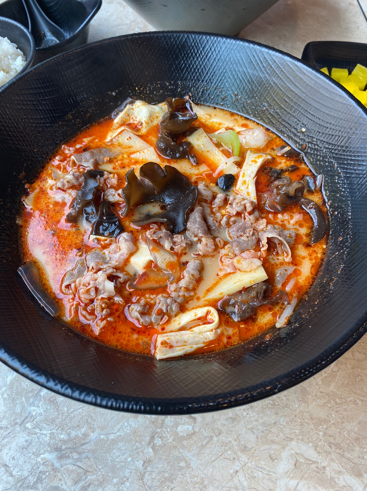
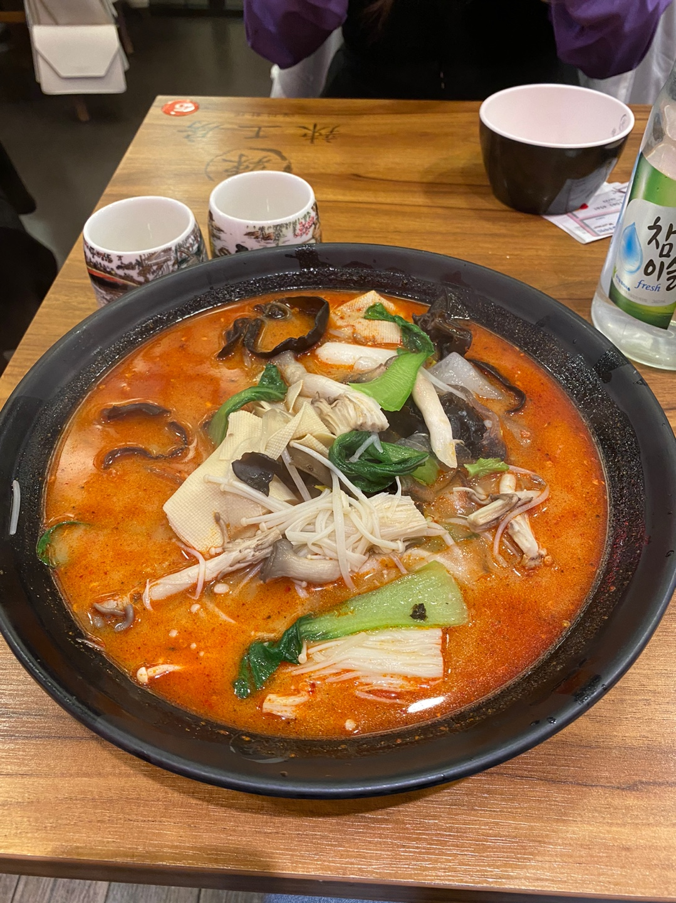
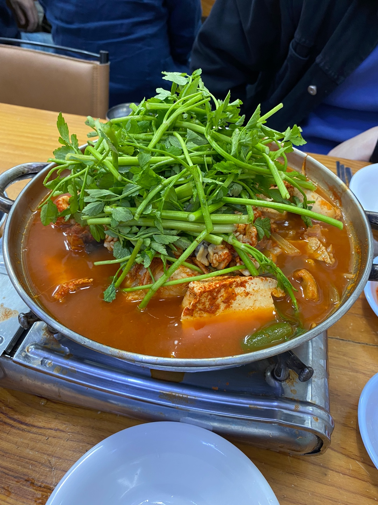
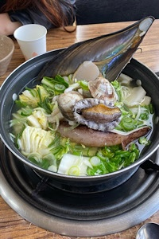
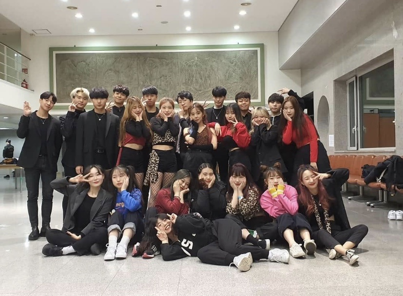
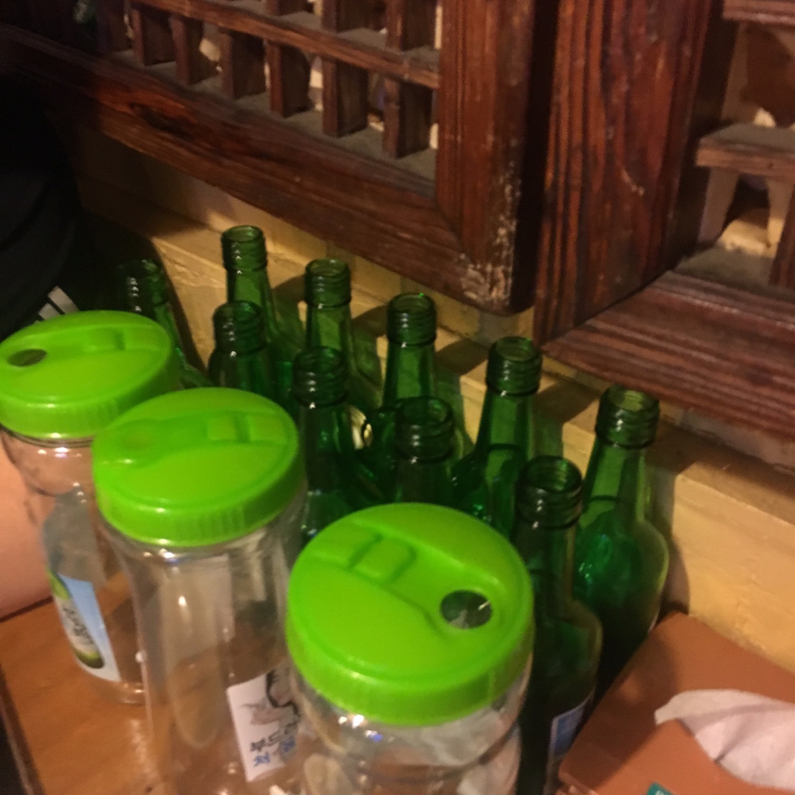
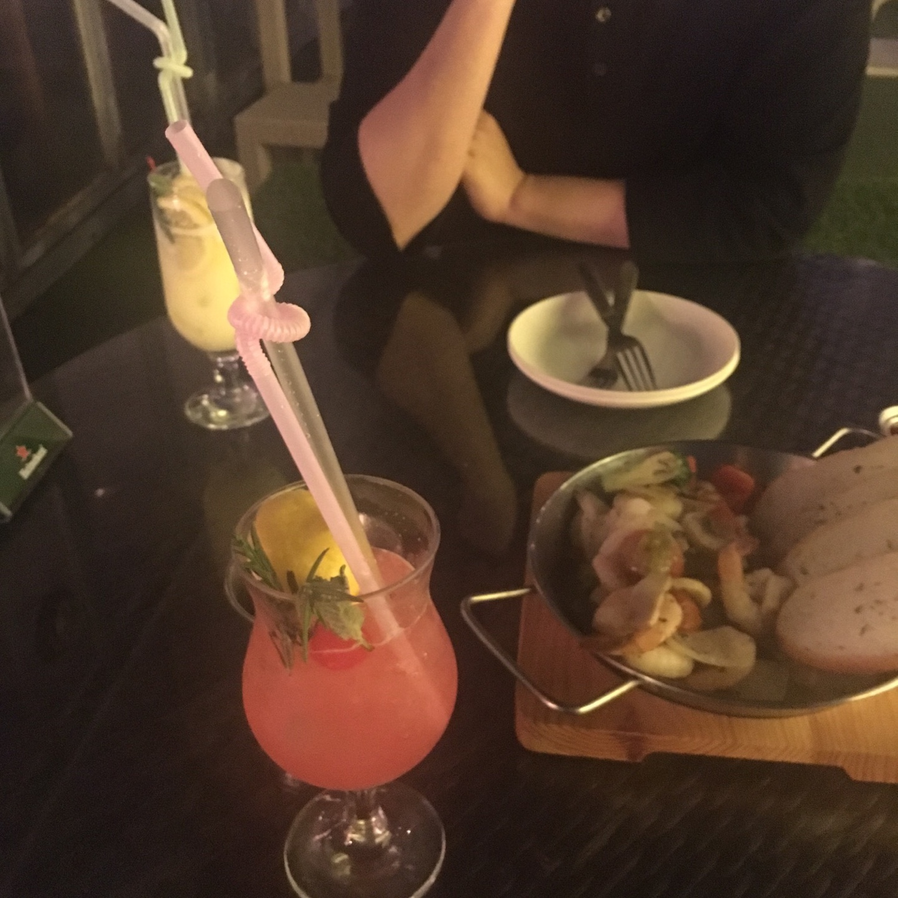
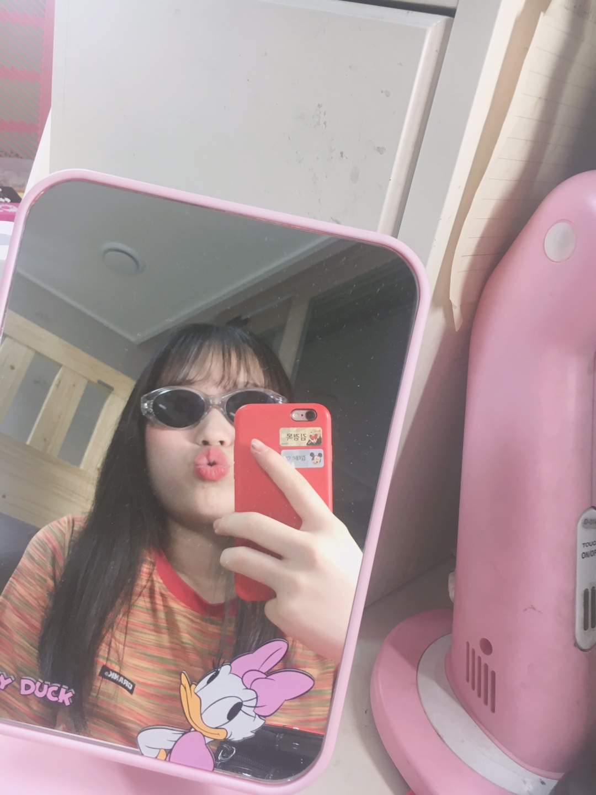
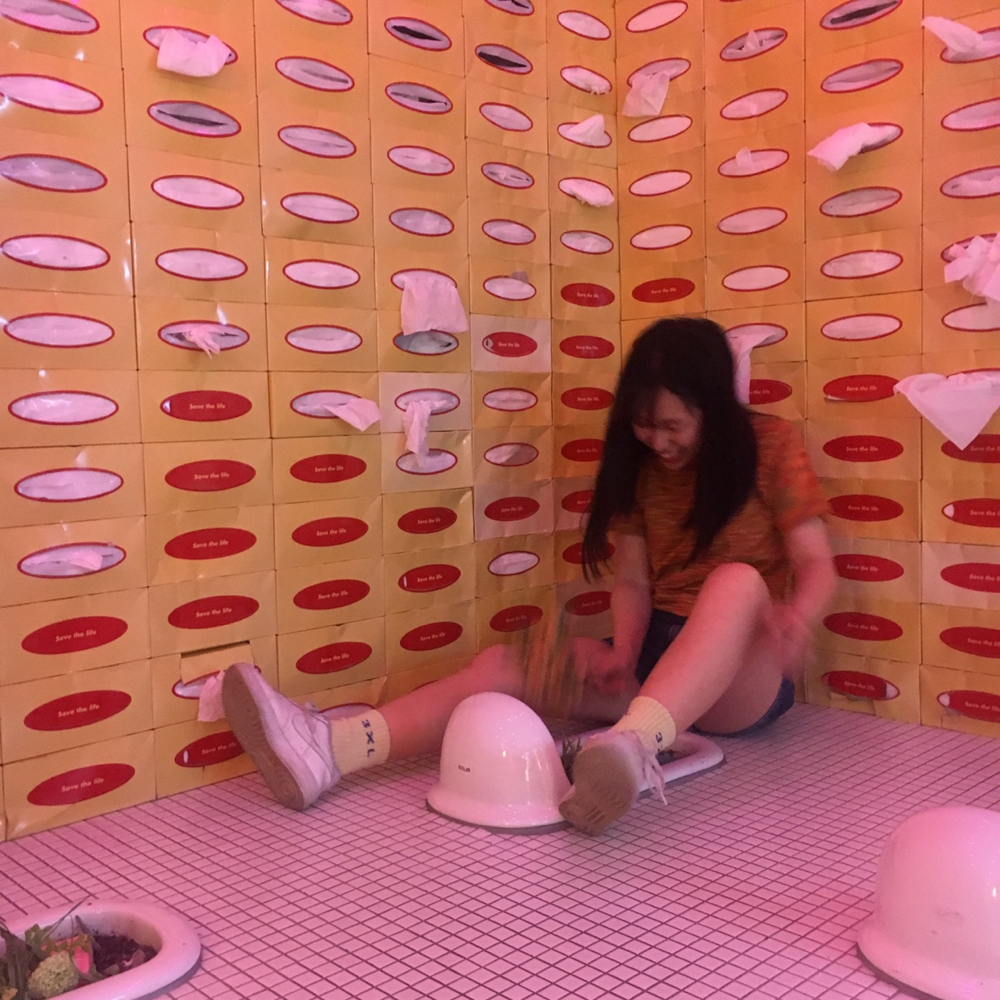

Name:Kimdoyeong
Birth:2001.02.09.
Home:Seoul.Korea
School:Myongji Univ.Department of Convergence Software
Like:Red Velvet,Itzy
주절주절한 자기소개:안녕하세요 명지대학교에 재학중인 김도영입니다.
전공이 컴퓨터관련이지만 멋쟁이 사자처럼에 들어온 이유는 전공자가 아닌 사람들과
함께 코딩에 대해서 이야기 해보고 싶어서 들어오게 되었습니다. 물론 비전공자급으로
코딩에 자신이 없지만.. 열심히 해서 2020년이 끝나갈 때는 우수학생으로 꼽히고 싶네요.
본격적으로 저에대해 소개하겠습니당
수줍은 제 사진이랍니당↓↓ 인스타에 오시면 저의 더 많은 정보를 보실수있어요 ㅎㅎ 맞팔해용!
제가 홈페이지 만들면서 가장 소개하고싶었던 것은
저의 최애 음식인데요! 저는 평소에 달달한 음식을 매우싫어하고
맵고짜고 자극적인 음식과 면요리를 매우매우매우 좋아한답니당 ㅎㅎ
첫번째 제가 여러분께 추천하는 도슐랭가이드 음식은 마라탕입니다!! 마라탕은 제가 먹고싶은 재료만 가져와서
마음에드는 맵기로 조리해주시는데 너무너무 맛있어요 ㅠㅠ 개인적으로 죽순넣은거 좋아해서 죽순진짜많이넣어용..흐흐흐
강남역 라공방2호점, 탕화쿵푸 명지대점 미쳤어요...♥
 저는 평소 맵고짜고 자극적인 음식 마라탕을 매우좋아하지만 두번째로 소개해드릴 음식은
광장시장 대구탕입니다!! 미나리 리필 되고요!
감칠맛 정말 대박입니다... 소주랑 먹어도 좋은데 개인적으로는 막걸리 추천드려요 ♥
마지막은 제가 너무너무 좋아하는 해물칼국수입니다...... 제가 좋아하는 해물과 면을 합친요리라 너무너무 제가 사랑해요... 이거쓰는 동안 또 먹고싶어졌어요.....ㅠㅠ힝
다음은 저의 학교생활을 소개하도록 하겠습니다! 저는 현재 명지대학교 2학년에 재학중입니다! 저의 1학년 과거를 소개하겠습니다!
저는 지난 1년간 댄스부 활동을 열심히 했었는데요! 저기 첫줄 파란옷 양갈래가 저랍니다!
여러분 ....그리고 여러분께 너무너무 강조 드리고 싶은게 있어요....
저 사실 엄청난 술러버랍니다......술이 너무 좋아요 진짜로요
이 사진은 제가 친구 4명과 먹었던 사진이랍니당 ㅎㅎ 친구 두명은 저때 제가 기숙사까지 데려다줬어용.. 나머지 한명이랑은 새피까지 ^^
아 여러분..그럼 소주만 먹냐구용? 아니여... 역전할맥을 달고산답니당.. 정말여
이렇게 칵테일도 분위기 있게 먹을 수 있는 무드걸스 김도영과 놀고 싶지 않으신가요...?
아 그럼 저랑 놀고싶은데 술을 안좋아하신다구요..? 괜찮아요 저는 소주안먹고 물한잔 먹어도 그자리에서 술게임 가능합니다!^^
사실 술게임이 좋아서 술을 먹는거같아용...이렇게 텐션높은 명지대 술럽럽 김도영의 글을 읽으신다면 술드시고싶으실때 제 생각이 날거랍니당!
그럼 저기 위에 페이스북과 인스타그램 버튼을 누르면 바로 연결될거예요. 부담없이 정말정말 부담없이 연락주세요^^ 전 진짜 항상 환영입니다..
특히 레드벨벳 좋아하시는 여팬분들 ..제가 환장합니다.바로 달려갈게요 ㅎㅎ
그럼 이만 저의 자기소개 홈페이지를 끝내겠습니다! 재밌게 봐주셔서 매우 감사합니다!
흥많은 여러분들의 연락을 기다립니다..당장 연락주세요 마지막은 여러분을 향해 끼부리는 저의 매력적인 모습입니다. 다들 김.도.영.하세요
 